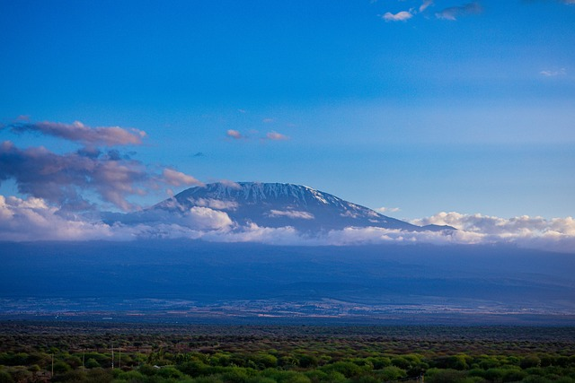

Mount Kilimanjaro is the tallest mountain in Africa, located in Tanzania. It is a dormant volcano with three volcanic cones: Kibo, Mawenzi, and Shira. Rising to an elevation of 5,895 meters (19,341 feet) above sea level, Kilimanjaro is a popular destination for trekking and climbing enthusiasts from around the world.
The best time to climb Mount Kilimanjaro is during the dry seasons, which occur from late June to October and from late December to early March. During these periods, the weather is typically clear, and there is less precipitation, providing favorable conditions for trekking and summiting the mountain.
It's essential to avoid the rainy seasons, which are from mid-March to early June and from November to mid-December. The rainy seasons bring heavy rainfall, which can make the trails slippery and more challenging to navigate. Additionally, clouds and fog may obscure the breathtaking views of the surrounding landscape.
While Mount Kilimanjaro is not known for its wildlife compared to other Tanzanian national parks, it still offers opportunities to encounter various species, particularly on the lower slopes and surrounding areas. Some of the wildlife you may encounter include: